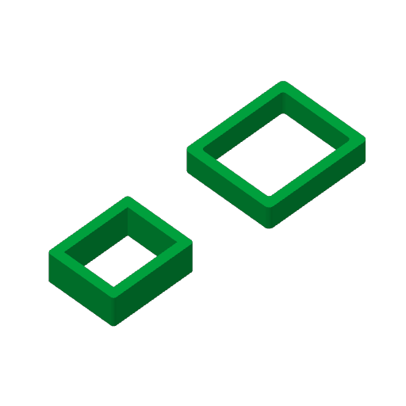
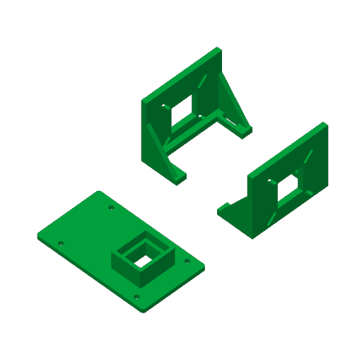
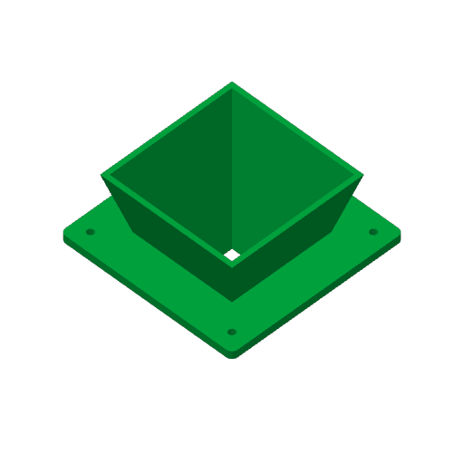
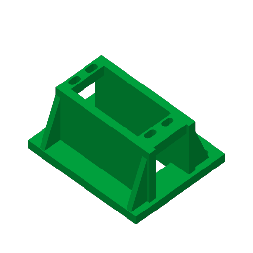

0.4mm标准喷嘴 · 拓竹PETG HF · 纹理PEI板 · 已实际切片
整套9件主零件＋1对试片。每种机型都有6盘可选，不要把五套全部打印。
P2S：试片／上斗 · X1 Carbon：试片／接座与相机座X2D：下斗 · A1：舵机架／限位与旗片 · H2D备用
主机切片检查通过，尚未实打。先核实机型和料盘，打印00试片；设备／板材／喷嘴不同则重新切片。

2只小试片，先确认插接；跨机器时交叉试配。
1件，大口法兰贴床，无支撑。

3件，底面贴床，无支撑；实物孔距先核纸样。

1件，小口贴床；支撑仅位于豆路外侧。

1件，6道墙／40%填充，清掉安装耳承梁下支撑。
3件，限位座侧放，无支撑。